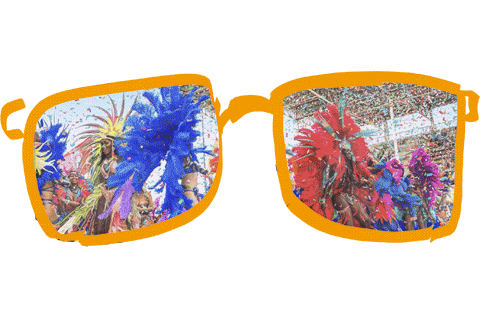

Joy is one of those feelings that shows up everywhere, and the more I pay attention, the more I realize how universal it really is. Biologically, we all react the same way. A smile means the same thing no matter where you are, laughter doesn’t need translation, and that rush of endorphins gives everyone the same kind of light, lifted feeling. A child laughing in Brazil sounds almost identical to a child laughing in Sweden, which is kind of beautiful when you think about it.
Emotionally, joy comes from moments every human experiences. Relief after something hard, finally getting something you’ve been hoping for, or just being surprised by something unexpectedly good. It can be as simple as eating when you’re hungry, hugging someone you’ve missed, or seeing something genuinely beautiful. Those moments hit all of us in the same way.
Culturally, every society has its own way of celebrating joy. Festivals, music, dancing, big meals, community gatherings. The details look different, whether it’s Diwali lights, carnival parades, or Thanksgiving dinners, but the purpose is the same. People want to mark happiness and share it with others. And honestly, joy doesn’t need an explanation. You can see it instantly when someone gets good news, watches a sunset, or reaches a dream they’ve been chasing. That bright expression, that urge to laugh or shout or just take in the moment, is something we all recognize because we’ve felt it ourselves.